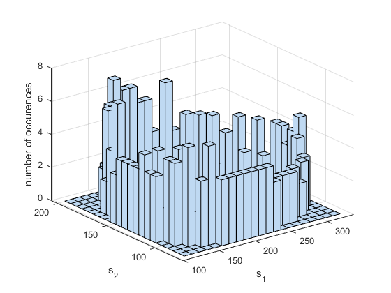

Contents
close all
Differential equations of system
g1 = 1;
m2 = 1;
l12 = 0.01;
g21 = 0.01;
k = 625;
B = 0.005;
deq = @(t,x) [g1.*x(1).*(1 - (x(1)./k)) - (l12.*x(1).*x(2))./(1 + B*x(1));...
(g21.*x(1).*x(2))./(1 + B*x(1)) - m2.*x(2)];
Solve equations using numerical ODE solver 45 (nonstiff runge kutta)
x0 = [121.3297, 156.0928];
T = 11.2;
options = odeset('RelTol',1e-10,'Stats','on');
[t, s] = ode45(deq,[0 T], x0, options);
66 successful steps
2 failed attempts
409 function evaluations
Marginal probability density functions
dsdt = zeros(size(s));
for i = 1:size(t,1)
dsdt(i,:) = deq(t(i,1),s(i,:)')';
end
pdf_s1 = (1/T)*(1./dsdt(:,1));
pdf_s2 = (1/T)*(1./dsdt(:,2));
pdf_s1_int = trapz(s(:,1), pdf_s1)
pdf_s2_int = trapz(s(:,2), pdf_s2)
pdf_s1_int =
1.0000
pdf_s2_int =
1.0001
Phase space plot
figure()
plot(s(:,1), s(:,2))
xlabel('s_1(t)')
ylabel('s_2(t)')
System component plots
figure()
subplot(1,2,1)
plot(t, s(:,1))
xlabel('t')
ylabel('s_1(t)')
subplot(1,2,2)
plot(t, s(:,2))
xlabel('t')
ylabel('s_2(t)')
State histogram
figure()
ds1 = range(s(:,1))/20;
ds2 = range(s(:,2))/20;
edge_s1 = min(s(:,1)):ds1:max(s(:,1));
edge_s2 = min(s(:,2)):ds2:max(s(:,2));
center_s1 = edge_s1(1:end-1) + ds1/2;
center_s2 = edge_s2(1:end-1) + ds2/2;
hist3(s, {edge_s1 edge_s2});
xlabel('s_1')
ylabel('s_2')
zlabel('number of occurences')

Marginal PDF's
figure()
subplot(1,2,1)
N = histcounts(s(:,1), edge_s1);
normHist_s1 = N/sum(N*ds1);
bar(center_s1, normHist_s1, 1)
ylimits = ylim();
hold on
plot(s(:,1), pdf_s1, '-r', 'LineWidth', 2)
xlim([min(s(:,1)), max(s(:,1))])
ylim(ylimits)
xlabel('s_1')
ylabel('probability density function, p(s_1)')
legend('sample', 'analytical')
subplot(1,2,2)
N = histcounts(s(:,2), edge_s2);
normHist_s2 = N/sum(N*ds2);
bar(center_s2, normHist_s2, 1)
ylimits = ylim();
hold on
plot(s(:,2), pdf_s2, '-r', 'LineWidth', 2)
xlim([min(s(:,2)), max(s(:,2))])
ylim(ylimits)
xlabel('s_2')
ylabel('probability density function, p(s_2)')
legend('sample', 'analytical')
Marginal CDF's
fun_s1 = @(iEnd) trapz(s(1:iEnd,1), pdf_s1(1:iEnd));
fun_s2 = @(iEnd) trapz(s(1:iEnd,2), pdf_s2(1:iEnd));
cdf_s1 = arrayfun(fun_s1, 2:length(t));
cdf_s2 = arrayfun(fun_s2, 2:length(t));
figure()
subplot(1,2,1)
ecdf(s(:,1))
hold on
stairs(linspace(min(s(:,1)), max(s(:,1)), length(cdf_s1)), cdf_s1)
ylim([0,1])
xlabel('s_1')
ylabel('cdf s_1')
legend('sample', 'analytical')
subplot(1,2,2)
ecdf(s(:,2))
hold on
stairs(linspace(min(s(:,2)), max(s(:,2)), length(cdf_s2)), cdf_s2)
ylim([0,1])
xlabel('s_2')
ylabel('cdf s_2')
legend('sample', 'analytical')